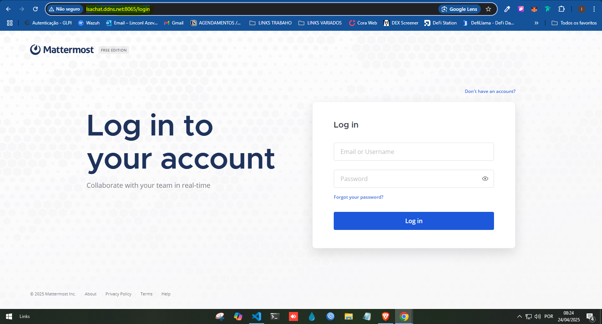
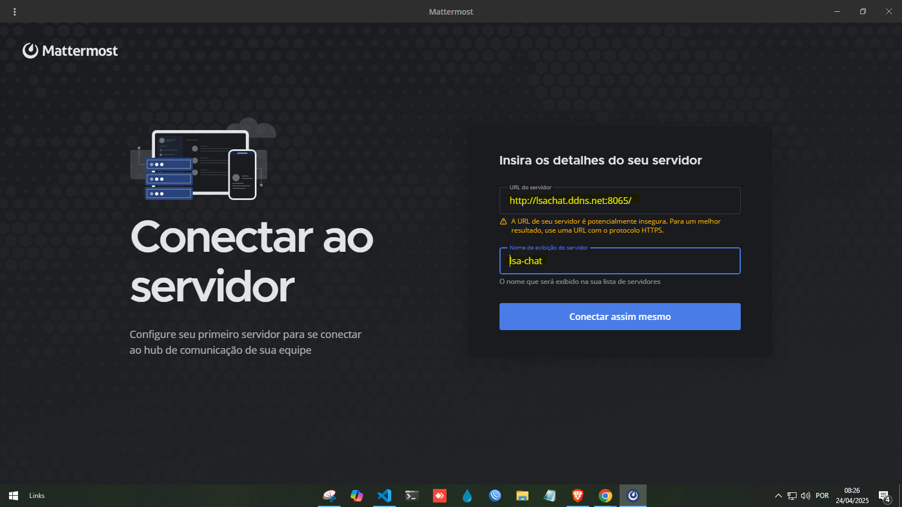

Passo 1 – Acesse o Mattermost
Abra o navegador e acesse o link abaixo para se conectar ao servidor:
Abrir Mattermost WebUtilize seu login e senha fornecidos previamente.
Passo 2 – Instale o aplicativo (opcional)
Para uma melhor experiência, instale o aplicativo no seu dispositivo:
💻 Desktop:
📱 Celular:
Passo 3 – Conectando ao servidor
Ao abrir o aplicativo, insira o endereço do servidor:
http://192.168.254.83:8065
Depois, faça login com suas credenciais. OBS.: No momento só está acessÃvel na rede da Matriz e Labsul
Passo 4 – Usando o Mattermost
- Entrar em canais: Acesse os canais da sua equipe para conversar por texto.
- Mencionar alguém: Use
@nomepara mencionar um colega. - Enviar arquivos: Clique no clipe 📎 ou arraste arquivos para o chat.
- Responder em threads: Clique em "Responder" para manter a conversa organizada.
Suporte
Se tiver problemas ou dúvidas, entre em contato com o setor de TI.
Você também pode usar o canal #ajuda dentro do Mattermost.